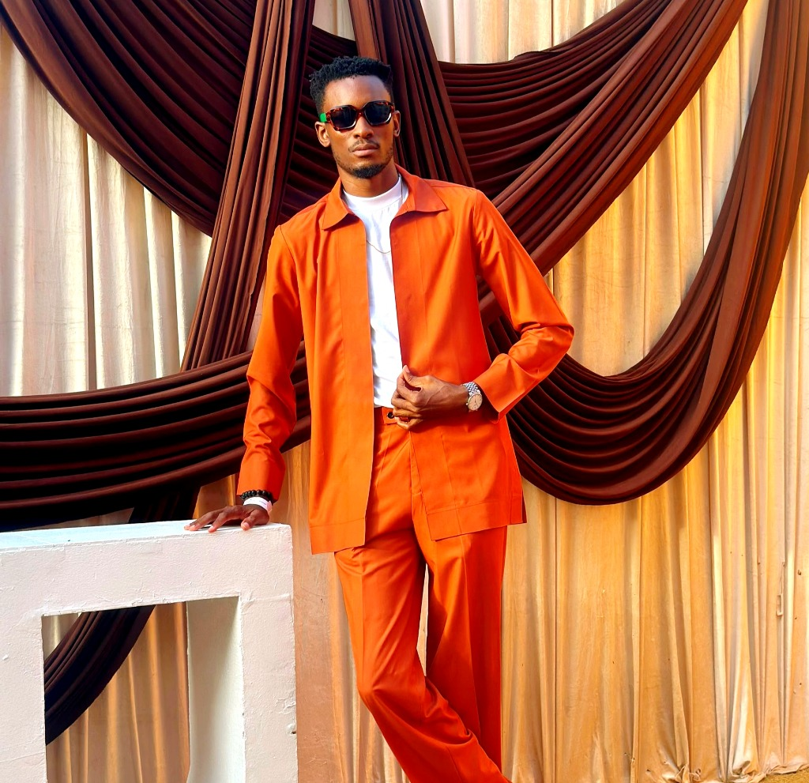

Creative Technologist
Chukwuemeka Wilson Ekelem
Motion designer, visual storyteller, and Cybersecurity undergraduate combining creative direction in Adobe After Effects and Cinema 4D with disciplined security engineering and digital sustainability.
Explore Motion Reels